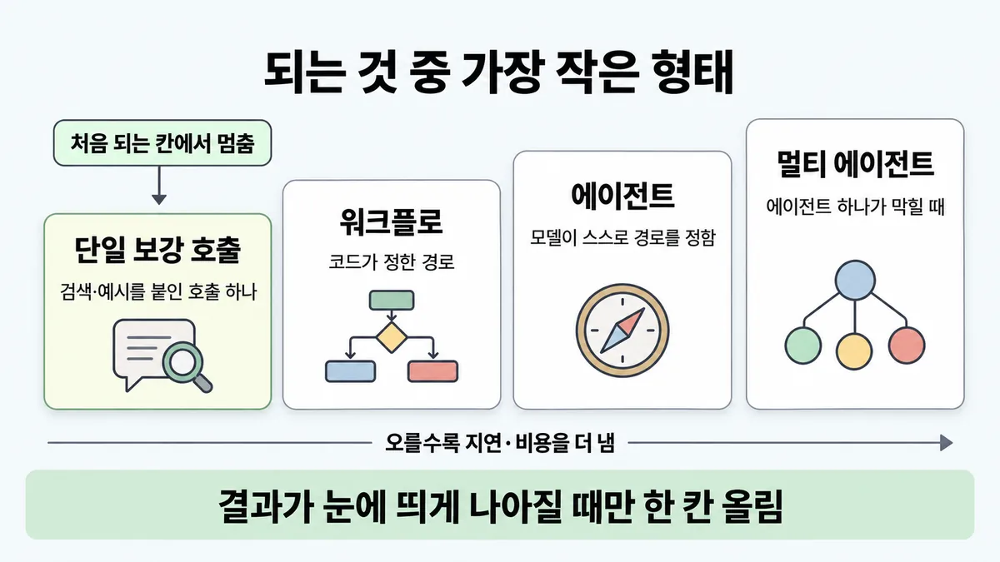
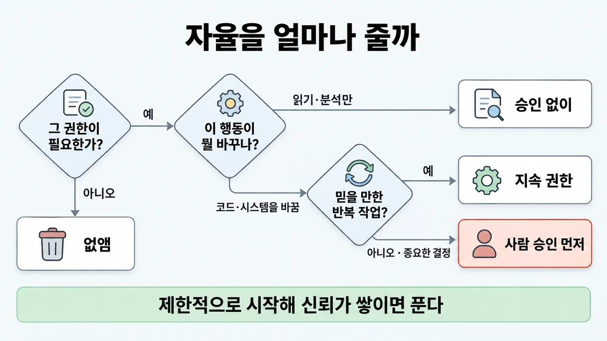
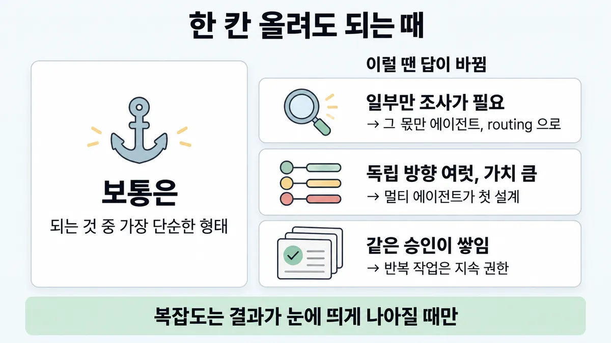

■ 가장 작은 맞는 형태
표시가 없는 문장은 공식 문서에서 확인한 내용이에요. 다른 표시는 읽는 법
왜 배우나 — 시험이 요구하는 것
시험 목표 1.3 구조 패턴 고르기 · D1 설계 17%Select appropriate architectural patterns (workflow, agentic, augmented LLM)
이 개념으로 푸는 판단 (할 수 있어야 하는 것)
- 1.3③ 가장 작은 맞는 형태는 어디서 멈추나? — 확장 사다리(단일 보강 호출 → 라우터 → 워크플로 → 에이전트)와 자율성 단계(읽기 전용 → 사람 승인 → 높은 자율)
- 1.1① 이 일, LLM 이 꼭 있어야 하나? — 코드 / LLM / 둘을 섞기(하이브리드) 중 어디에 맡기나
- 7.3② 프로덕션 장애에서 에이전트는 어디까지? — 원인 조사(트리아지)와 복구 조치의 권한 경계
한눈에
되는 것 중 가장 단순한 형태에서 멈추는 규칙이다. 복잡도는 필요할 때만 올린다. 에이전트를 아예 안 만드는 것도 답이다
에이전트형 시스템은 지연(latency)·비용을 감수하고 과제 성능을 얻는 trade-off(절충)다. 그래서 그 trade-off 가 맞을 때만 쓴다
비유 스케일 아웃 전에 캐시·쿼리 튜닝부터 한다. 권한은 읽기 전용 IAM 역할, 승인형 배포, 자동 배포 순으로 간다


ELI5
동네 가게에 심부름 가는데 트럭을 빌릴지, 자전거를 탈지 고르는 거예요.
- 우유 한 통이면 걸어가도 돼요.
- 짐이 많아지면 그때 자전거, 그다음에 트럭이에요.
- 트럭은 기름값도 들고 사고도 크게 나요.
- 처음 운전하는 사람에겐 트럭 열쇠를 바로 주지 않아요.
개념 설명
원리
사다리 (단순에서 복잡으로)
- 단일 augmented LLM 호출 : LLM 한 번에 검색(retrieval)·도구·메모리를 붙인다. 흔한 질문 대부분은 여기서 끝난다.
- 워크플로 : 코드가 경로를 정한다. 예측 가능하고, 단계마다 검사할 수 있고, 테스트가 쉽다.
- 에이전트 : 모델이 경로를 정한다. 단계 수를 미리 모르는 열린 문제에 쓴다. 대신 비용이 오르고 오류가 쌓인다.
- 멀티 에이전트 : 에이전트 하나가 못 넘는 제약이 있을 때만 쓴다 (◆ 단일 vs 멀티 에이전트).
- 한 칸 올라갈 때마다 지연(latency)·비용을 내고 성능을 얻는다. 그래서 "올려서 결과가 나아졌나" 를 재야 올린다.
자율성 (권한의 사다리)
- 읽기·분석은 승인 없이 한다.
- 바꾸는 행동은 사람 승인을 먼저 받는다.
- 믿을 만한 반복 작업에는 지속 권한을 준다.
- 제한적으로 시작해서 신뢰가 쌓이면 푼다. 필요 없는 권한은 승인 단계를 붙이지 말고 없앤다(■ 최소 권한).
왜 작은 쪽부터인가
- 단순할수록 디버깅·평가가 쉽다. 프레임워크·에이전트는 프롬프트와 응답을 가린다. 그래서 원인 찾기가 어려워진다.
- 몇 달 들인 멀티 에이전트가 프롬프트를 고친 단일 에이전트와 같았던 사례가 공식 글에 있다.
규칙과 판단


갈림길
① 어디서 멈추나 [1.3③] [1.1①]
augmented LLM 호출 하나
검색(retrieval)·예시를 붙인 단일 호출이면 대개 충분하다
워크플로
워크플로는 잘 정의된 일에 예측 가능성과 일관성을 준다
에이전트 하나
에이전트 하나는 단계 수를 미리 알 수 없고 고정 경로를 코드에 박아 둘 수 없는 열린 문제에 쓴다
멀티 에이전트
멀티는 ◆ 단일 vs 멀티 에이전트 에서 다룬다
② 한 칸 올릴까 [1.3③]
한 칸 올린다
결과가 눈에 띄게 나아질 때만 복잡도를 더한다
그대로 둔다
단순한 방법이 모자랄 때만 여러 단계 에이전트를 쓴다
③ 자율을 얼마나 [1.3③] [7.3②]
없앤다
필요 없는 권한은 확인창을 붙이기보다 먼저 없앤다. 자세한 것은 ■ 최소 권한 에 있다
승인 없이 한다
읽기 전용이 기본이다. 분석·검토는 승인 없이 한다
지속 권한을 준다
믿을 만한 반복 작업에는 사용자가 지속 권한을 준다
사람 승인을 먼저 받는다
중요한 결정 전에는 사람이 통제(control)한다
규칙 원문 ①②③ (갈림길로 그린 규칙)
-
확장 사다리 (단순에서 복잡으로) : 사다리는 네 칸이다. 가장 단순한 칸부터 보고, 처음 되는 칸에서 멈춘다 [1.3③]
- 단일 augmented LLM 호출 : 검색·도구·메모리를 붙인 LLM 을 한 번 부른다
- 워크플로 : 코드가 경로를 정한다
- 에이전트 : 모델이 스스로 경로를 정한다
- 멀티 에이전트
흔한 질문이 대부분이면, 검색·예시를 붙인 단일 호출이면 대개 충분하다
워크플로는 잘 정의된 일에 예측 가능성과 일관성을 준다. 에이전트는 유연성과 모델 주도 결정이 규모 있게 필요할 때 쓴다
에이전트 하나는 단계 수를 미리 알 수 없고 고정 경로를 코드에 박아 둘 수 없는 열린 문제에 쓴다. 멀티는 ◆ 단일 vs 멀티 에이전트 에서 다룬다
사다리 칸 이름은 이 카드의 해석이다. 공식 순서는 augmented LLM 에서 워크플로·에이전트로 "점점 복잡도를 올리는" 순서다
-
한 칸 올리는 조건 : 결과가 눈에 띄게 나아질 때만 복잡도를 더한다. 단순한 방법이 모자랄 때만 여러 단계 에이전트를 쓴다 [1.3③]
워크플로로 되면 워크플로를 쓴다. 에이전트는 정말 필요할 때만 쓴다. 워크플로가 테스트·평가가 쉽고 예측 가능하다 (Skilljar)
에이전트 칸으로 올리면 비용이 오른다. 오류도 쌓인다. 그래서 세 가지를 둔다
- 샌드박스에서 충분히 시험한다
- 가드레일을 둔다
- 멈춤 조건(최대 반복 수)을 둔다
프레임워크 : 직접 API 로 시작한다(많은 패턴이 몇 줄이다). 프레임워크는 프롬프트·응답을 가린다. 그래서 디버깅이 어렵다. 복잡도를 더하고 싶게도 만든다
프레임워크를 쓰면 밑단 코드를 이해해야 한다. 밑단이 어떻게 도는지 잘못 아는 것이 흔한 고객 오류 원인이다. 프로덕션으로 갈수록 추상화 층을 줄여도 된다. 자세한 것은 ◆ 직접 API vs Agent SDK vs CLI vs Managed Agents 에 있다
-
자율성 단계 (Claude Code 기본값) : 세 단계로 간다 [1.3③] [7.3②]
- 읽기 전용이 기본이다. 분석·검토는 승인 없이 한다
- 코드·시스템을 바꾸기 전에는 사람이 승인한다
- 믿을 만한 반복 작업에는 사용자가 지속 권한을 준다
중요한 결정 전에는 사람이 통제한다 (예 : 구독 해지 전에 승인한다). 자율과 감독의 균형은 상황마다 크게 다르다
제한적으로 시작해 신뢰가 쌓이면 푼다. Agent SDK 에서는
plan으로 계획을 검토한 뒤acceptEdits로 바꾼다"자율 = 권한" 은 이 카드가 붙인 말이다(공식은 신뢰·가드레일로 표현한다). 에이전트는 모델 결정을 어느 정도 믿을 때 쓴다. 믿을 수 있는 환경에서 규모를 키우는 데 맞는다
투명성(transparency) : 계획을 보이게 한다(실시간 할 일 목록). 자세함은 중간으로 맞춘다. 너무 적으면 판단할 수 없다. 너무 많으면 묻힌다
필요 없는 권한은 확인창을 붙이기보다 먼저 없앤다. 자세한 것은 ■ 최소 권한 에 있다
더 깊이 : 판단 규칙 · 상황 변수 (설명)
판단 규칙
| 조건 | 답 | 근거 |
|---|---|---|
| 흔한 질문이 대부분이고, 헬프센터 문서가 있다 | 검색과 예시를 붙인 단일 호출을 쓴다 | building-effective-agents "optimizing single LLM calls with retrieval and in-context examples is usually enough" |
| 단계를 미리 알고 경로가 고정돼 있다 | 워크플로를 쓴다 | building-effective-agents · Skilljar 287794 |
| 단계 수를 미리 모르는 열린 문제이고, 모델 결정을 어느 정도 믿을 수 있다 | 에이전트를 쓴다 | building-effective-agents |
| 복잡도를 올리자는 제안이 있다 | 재 보고 결과가 나아질 때만 올린다 | building-effective-agents |
| 처음 구현한다 | 직접 API 로 시작한다. 프레임워크를 쓰면 밑단을 이해한다 | building-effective-agents |
| 에이전트를 도입한다 | 샌드박스에서 시험하고, 가드레일과 멈춤 조건을 둔다 | building-effective-agents |
| 에이전트가 코드·시스템을 바꾸려 한다 | 사람 승인을 먼저 받는다 (읽기는 승인 없이 한다) | safe-trustworthy-agents |
| 승인할 일이 같은 종류로 반복되고, 믿을 만하다 | 그 작업만 지속 권한을 준다 | safe-trustworthy-agents "Users can grant persistent permissions for routine tasks they trust Claude to handle." |
| 처음에는 불안하고, 쓰면서 믿음이 쌓인다 | 제한적 모드로 시작해 푼다 (plan 에서 acceptEdits 로) | agent-sdk-permissions |
상황 변수
| 변수 | 값 | 답 쪽 | 등급 | 근거 |
|---|---|---|---|---|
| 요청 모양 | 흔한 질문이다 · 문서에서 답을 찾는다 | 단일 augmented LLM 호출을 쓴다 | 판단 규칙 1 | |
| 요청 모양 | 정해진 절차다(환불 : 자격, 정책, 처리, 알림 순서) | 워크플로를 쓴다 | 판단 규칙 2 | |
| 요청 모양 | 원인 조사처럼 다음 걸음이 결과에 따라 바뀐다 | 에이전트를 쓴다 | 판단 규칙 3 | |
| 섞인 트래픽 | 대부분 흔한 질문이고 일부는 조사다 | 칸을 나눠 쓴다 (전부 에이전트가 아니다) | 계산 | 뒤집히는 때 1 |
| 평가 결과 | 올린 칸이 결과를 못 올렸다 | 원래 칸으로 돌아간다 | 판단 규칙 4 | |
| 행동의 영향 | 읽기다 · 되돌릴 수 있다 | 자율로 둔다 | safe-trustworthy-agents | |
| 행동의 영향 | 해지·삭제처럼 중요한 결정이다 | 사람이 승인한다 | safe-trustworthy-agents | |
| 승인 부담 | 하루에 같은 종류 승인이 쌓인다 | 그 반복 작업만 지속 권한을 준다 | 뒤집히는 때 3 | |
| 팀의 도구 | 프레임워크를 이미 쓴다 | 써도 된다. 밑단 코드 이해가 조건이다 | building-effective-agents |
연습 문제
쇼핑몰 고객지원 문의는 대부분 배송·반품 같은 흔한 질문이다. FAQ 검색(retrieval) 결과와 답변 예시를 붙인 호출 한 번으로 시범 평가를 통과했다단일 호출로 됨. 개발팀은 "나중에 커질 테니 첫날부터 멀티에이전트 프레임워크로 가자"고 한다. 어디서 멈춰야 하나?
시험 대비
함정
- "첫날부터 멀티에이전트 프레임워크로 간다" 는 함정이다. 단일 augmented LLM 호출부터 시작한다. 몇 달 들인 멀티가 프롬프트를 개선한 단일과 같았던 사례가 있다
- "강한 모델이니 자율 에이전트가 기본 업그레이드다" 는 함정이다. 에이전트는 지연·비용을 감수하는 trade-off 다. 오류도 쌓인다. 신뢰·가드레일 만큼만 쓴다
- "나중에 필요할 테니 처음부터 크게 만든다" 는 함정이다. 결과가 눈에 띄게 나아질 때만 한 칸 올린다
- 이미 운영에 낸(출시한) 에이전트가 운영(production) 로그에서 거의 늘 같은 도구 순서로 움직이면, "도구 설명·프롬프트만 다듬자" 는 함정이다. 한 칸 내린다. 그 순서를 워크플로로 바꾸고, 예외만 에이전트에 맡긴다. 내리는 적용은 이 카드의 해석이다. 공식은 복잡도를 결과를 낫게 할 때만 더하라는 것이다
- "프레임워크를 써야 프로덕션급이다" 는 함정이다. 추상화가 프롬프트·응답을 가린다. 프로덕션으로 갈수록 층을 줄여도 된다
- "목표가 맞으니 알아서 해도 된다" 는 함정이다. '파일 정리해 줘' 에 중복이라 여긴 것을 지우고 구조를 통째로 바꾼 예가 있다. 목표가 맞아도 맥락이 모자라 선을 넘었다. 그래서 바꾸는 행동 전에는 승인을 받는다
- "라우터" 를 사다리의 별도 칸으로 외우는 것은 함정이다. 공식에서 routing(라우팅)은 워크플로 패턴 중 하나다
신호
"For many applications, however, optimizing single LLM calls with retrieval and in-context examples is usually enough."
"Start with simple prompts, optimize them with comprehensive evaluation, and add multi-step agentic systems only when simpler solutions fall short."
"We suggest that developers start by using LLM APIs directly: many patterns can be implemented in a few lines of code."
"humans should retain control over how their goals are pursued, particularly before high-stakes decisions are made."
"This lets you start restrictive and loosen permissions as trust builds"
"The general recommendation is to always focus on implementing workflows where possible, and only resort to agents when they are truly required." (Skilljar)


더 깊이 : 뒤집히는 때 · 오답 재료 (설명)
뒤집히는 때
1. "흔한 질문이 대부분"인데 에이전트가 필요한 몫이 있을 때
- 조건 : 월 티켓 7,300건 중 83% 는 흔한 질문이다. 17% 는 원인 조사다(여러 시스템을 뒤져 봐야 한다).
- 계산 : 채팅 1회를 1 단위로 두면 에이전트는 ≈ 4 단위다 (연구 글 : 에이전트는 채팅의 약 4배 토큰). 전부 에이전트면 7,300 × 4 = 29,200 단위다. 나눠 쓰면 6,059 × 1 + 1,241 × 4 = 11,023 단위다. 전부 에이전트일 때의 약 38% 다.
- 전제 : 단일 augmented LLM 호출 1회 ≈ 채팅 1회로 본다(추론). 4배는 연구 글의 평균 관측치다. 분류(라우팅) 비용은 뺀다.
- 판단 : "대부분 흔한 질문" 이 "에이전트 금지" 라는 뜻은 아니다. 흔한 몫은 가장 작은 칸에 둔다. 조사 몫만 한 칸 올린다. 둘을 가르는 것은 routing(라우팅) 워크플로다(■ 워크플로 5패턴).
- 등급 : 계산 (배수는 확인)
- 근거 : multi-agent-research-system · building-effective-agents
2. 멀티 에이전트가 첫 설계로 맞는 때
- 조건 : 서로 독립인 방향 여러 개를 동시에 넓게 파야 한다(예 : 경쟁사 11곳 공개 자료를 각각 조사). 작업 가치도 높다.
- 판단 : 이것은 "처음부터 크게" 가 아니다. 단일 에이전트가 못 넘는 제약(병렬 · 컨텍스트 창 하나를 넘는 정보)이 있는 경우다. 사다리 규칙은 그대로다. 그 제약이 있는지를 먼저 본다. 판정은 ◆ 단일 vs 멀티 에이전트 에서 한다.
- 계산 : 멀티는 ≈ 15 단위다(채팅 대비). 한 건 가치가 그 비용을 넘어야 한다.
- 등급 : (제약 · 배수) · 예시는 새로 고른 것
- 근거 : multi-agent-research-system · building-multi-agent-systems
3. 승인 단계가 병목이 될 때
- 조건 : 사람 승인을 붙였다. 그랬더니 같은 종류 요청(예 : 주문 상태 메모 갱신)이 하루 240건 쌓인다.
- 판단 : 믿을 만한 반복 작업은 지속 권한으로 푼다. 해지·환불처럼 중요한 결정만 승인에 남긴다. "승인은 무조건 많을수록 안전하다" 가 아니다.
- 등급 : (지속 권한 · 중요한 결정 전 통제(control)) · 승인을 빈도가 아니라 피해 범위로 거는 규칙 문장 자체는 공식에 없다미해결 3
- 근거 : safe-trustworthy-agents · agent-sdk-permissions
4. 프레임워크로 시작해도 되는 때
- 조건 : 팀이 이미 Agent SDK 류를 알고 있다. 빨리 시제품을 띄워야 한다.
- 판단 : 공식도 "프레임워크는 시작을 빠르게 해 준다" 고 인정한다. 조건은 둘이다. 밑단 코드를 이해해야 한다. 프로덕션으로 가며 추상화 층을 줄인다.
- 근거 : building-effective-agents
오답 재료
| 오답 | 왜 끌리나 | 왜 틀리나 | 근거 |
|---|---|---|---|
| "첫날부터 멀티에이전트 프레임워크" | 나중에 커질 테니 미리 하고 싶다 | 재 보고 결과가 나아질 때만 올린다. 몇 달 들인 멀티가 프롬프트를 고친 단일과 같았던 사례가 있다 | building-effective-agents · building-multi-agent-systems |
| "강한 모델이니 자율 에이전트가 기본 업그레이드" | 모델이 좋아졌으니 맡겨도 될 듯하다 | 에이전트는 지연·비용을 감수하는 trade-off(절충)다. 오류도 쌓인다. 모델 성능이 아니라 과제 모양과 신뢰로 정한다 | building-effective-agents |
| "도구를 여러 개 부르니 에이전트로" | 도구가 곧 에이전트라는 인상이 있다 | 경로를 코드가 정하면 워크플로다. 도구 유무가 기준이 아니다 (◆ 워크플로 vs 에이전트) | building-effective-agents |
| "모든 행동에 사람 승인을 붙이면 안전" | 확인은 많을수록 좋아 보인다 | 읽기는 승인 없이 한다. 믿는 반복 작업은 지속 권한을 준다. 필요 없는 권한이면 승인보다 제거한다 | safe-trustworthy-agents · ■ 최소 권한 |
| "목표가 맞으니 알아서 해도 된다" | 목표가 사람과 같다 | '파일 정리' 에 중복 삭제와 구조 통째 변경을 했다. 맥락이 모자라 선을 넘었다 | safe-trustworthy-agents |
| "에이전트 계획은 전부 보여 줘야 투명" | 많이 보여 줄수록 투명해 보인다 | 너무 많으면 묻힌다. 공식은 중간을 찾는다고 한다 | safe-trustworthy-agents |
| "prompt chaining(체이닝)·routing 은 에이전트보다 싸고 빠르다" (그래서 고른다) | 단순하면 쌀 것 같다 | prompt chaining 은 지연을 더 쓰고 정확도를 얻는다. 고르는 이유는 예측 가능성이다 | building-effective-agents |
참고
더 깊이 : 출처 · 상태 · 미해결 (참고)
출처
- 가이드 목표 1.3 공식 시험 가이드 v1.0
- building-effective-agents
- safe-trustworthy-agents
- agent-sdk-permissions
- building-multi-agent-systems
- Skilljar API 287794
상태
- 카드 해석 2곳(사다리 칸 이름 · "자율 = 권한" 표현. 둘 다 공식 문장이 아니다)
미해결
- 목록의 사다리는 단일 augmented LLM 호출, 라우터, 워크플로, 에이전트 순서다. 라우터를 별도 칸으로 뒀다. 공식에서는 routing 이 워크플로 패턴 중 하나다. 그래서 카드에는 라우터 칸을 두지 않았다.
- 목록의 자율성 단계 이름(읽기 전용, 사람 승인, 높은 자율)은 공식 문장이 아니다. 가장 가까운 공식은 Claude Code 기본값이다(읽기 전용 · 바꾸기 전 승인 · 반복 작업 지속 권한, safe-trustworthy-agents). 카드에는 이쪽으로 적는다.
- "승인은 빈도가 아니라 피해 범위로 건다"(목록 7.3②)는 공식 문장을 못 찾았다(safe-trustworthy-agents · agent-sdk-permissions 에서 "blast"·"scope"·"high-stakes" 검색). 가까운 공식은 "particularly before high-stakes decisions are made" 다.
- building-effective-agents 는 2024-12 글이다. 머리에 "도구 환경이 많이 바뀌었다" 는 안내가 붙어 있다. 사다리 원칙은 새 글(building-multi-agent-systems)도 같다.